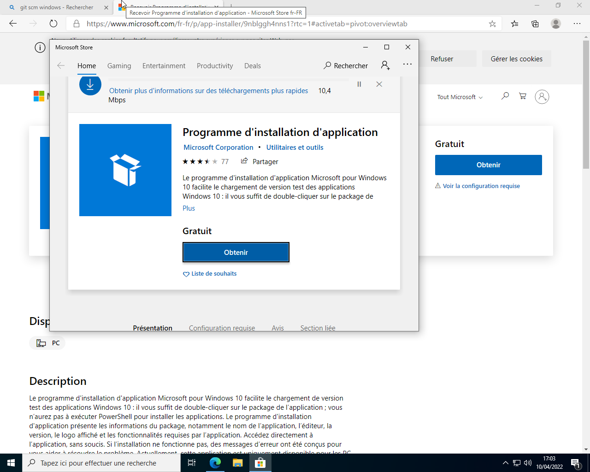
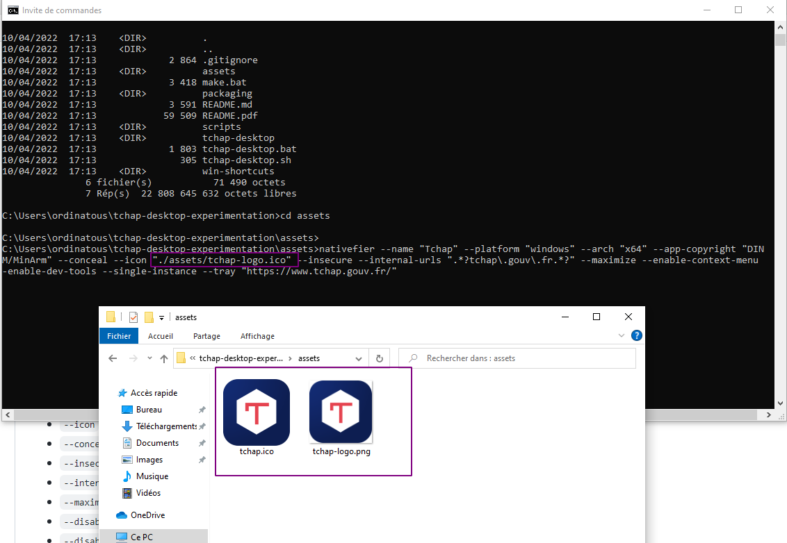
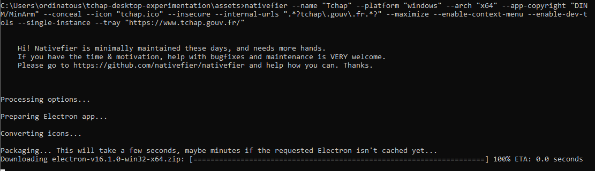
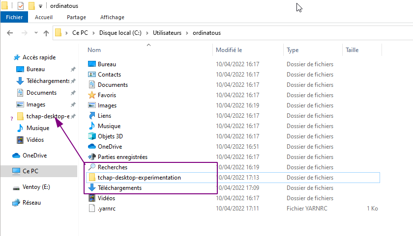
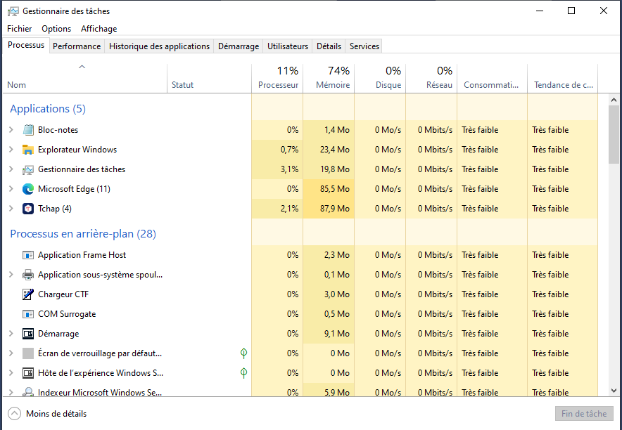

Petit retex
Nous tentons d’abandonner la messagerie “sécurisée Russe , et hébergée aux Emirats ou je ne sais oû " aka telegram au profit de Tchap .
Tchap est une application web , exploitant le protocole Matrix , Tchap est un fork du client élément, et on peut se connecter au serveurs de Tchap avec élément .
Tchap est exclusivement réservé aux agents de la fonction public, ainsi que quelques externes .
Pour y avoir accès, un membre de l’organisation y est invité , et il est de fait admin de l’application pour l’organisation , et a son tour invite les autres membres.
Par geekerie , j’ai voulu compiler l’application desktop. Pour faire cours , c’est une application électron , qui enferme la page web.
Mais , je me suis aperçu , que c’était du travail supplémentaire que de la maintenir , et de la re compiler après une mise à jour, d’autant plus qu’il faut que les utilisateurs ré installent la nouvelle application.
Le plus simple reste d’épingler un raccourci dans la barre de tâche .
Le readme de tchap-desktop
J’ai trouvé que ça manquait un peu de clarté.
Les prérequis
Il faut installer NodeJS et Yarn sur son système .
Mais c’est pas très clairement expliqué.
Présenté de la manière suivante , eut été plus clair .
Récupérer les packages et executer en mode administrateur
La gestion des packages avec npm ne fonctionnera pas , vous devez obligatoirement installer le package yarn .
Ajout de nativefier
En CMD, entrer cette commande: yarn global add nativefier
Dont voici le résultat.
C:\Users\ordinatous>yarn global add nativefier
yarn global v1.22.18
[1/4] Resolving packages...
[2/4] Fetching packages...
[3/4] Linking dependencies...
[4/4] Building fresh packages...
success Installed "nativefier@46.2.0" with binaries:
- nativefier
Done in 28.35s.
Ajout de GIT
Autant sous debian , l’ajout de git se fait simplement . Et git clone permet
de récupérer un dépôt git simplement.
Ce n’est pas vraiement le cas sous windows sous windows.
Lien d’installation de git 4 windows
Je vois alors , qu’il existe un outil nommé winget qui permet d’installer des applications en CLI: winget étant un module de powershell .
Cool , enfin une gestion centralisée des applications et des dépendances .
Non , il ne faut pas rêver, c’est l’équivalent de wget sous linux , rien de plus .
Pour installer winget: retour vers le web, ou le microsoft store …..

Ca ce fait en 2 temps:
- obtenir
- installer
Ensuite on passe en powershell .. et on entre cette commande:
winget install --id Git.Git -e --source winget

Le plus drôle , c’est que git ne sera pas disponible en powershell mais en CMD ..

C’est un truc qui m’exaspère de passer d’une console à une autre, d’autant qu’il n’y a pas d’historique de commande par défaut, une fois qu’on a fermé sa console il n’y aura pas d’historique à sa ré ouverture.
Copilation et erreurs
Un fois le dépôt cloné, le dev nous indique de se déplacer dans le répertoire assets du projet : OK .
Et indique également 2 liens pour récupérer les icônes , pourtant bien présentes dans le répertoire ,et les liens sont invalides.

Et c’est là que 2 erreurs se cumulent dans la ligne de commande .
- 1 Si on est dans le répertoire assets , il ne faut pas indiquer
./assets/bla bla bla.icomais directementbla bla bla.ico - 2 il y a une erreur dans le nom de fichier.
J’ai pas les captures d’écran , j’en ai pas fait aujourd’hui pour ça, et celle que j’ai sont au boulot. Oui, avant de râler , je teste plusieurs fois la méthode.
La bonne commande est celle-ci:
nativefier --name "Tchap" --platform "windows" --arch "x64"\
--app-copyright "DINUM/MinArm" --conceal --icon "tchap.ico"\
--insecure --internal-urls ".*?tchap\.gouv\.fr.*?" \
--maximize --enable-context-menu --enable-dev-tools \
--single-instance --tray "https://www.tchap.gouv.fr/"
En graphique ? 
Et en CLI
nativefier --name "Tchap" --platform "windows" --arch "x64"\
--app-copyright "DINUM/MinArm" --conceal --icon "tchap.ico"\
--insecure --internal-urls ".*?tchap\.gouv\.fr.*?" \
--maximize --enable-context-menu --enable-dev-tools \
--single-instance --tray "https://www.tchap.gouv.fr/"
Hi! Nativefier is minimally maintained these days, and needs more hands.
If you have the time & motivation, help with bugfixes and maintenance is VERY welcome.
Please go to https://github.com/nativefier/nativefier and help how you can. Thanks.
Processing options...
Preparing Electron app...
Converting icons...
Packaging... This will take a few seconds, maybe minutes if the requested Electron isn't cached yet...
Downloading electron-v16.1.0-win32-x64.zip: [====================================================================] 100% ETA: 0.0 seconds
Packaging app for platform win32 x64 using electron v16.1.0
Finalizing build...
App built to C:\Users\ordinatous\tchap-desktop-experimentation\assets\Tchap-win32-x64, move to wherever it makes sense for you and run the contained .exe file.
Un truc qui m’a fait marrer : M$ n’est pas foutu de mettre un répertoire par ordre alphabétique, j’ai voulu ajouter aux accés rapide :

Bref Tchap se lance bien:


Finalement , le fait que ce soit une application électron , rend compilable également sous linux . Mais est-ce bien utile ?
L’application web suffit.
(Ce travail est sous licence Attribution-NonCommercial 4.0
International .